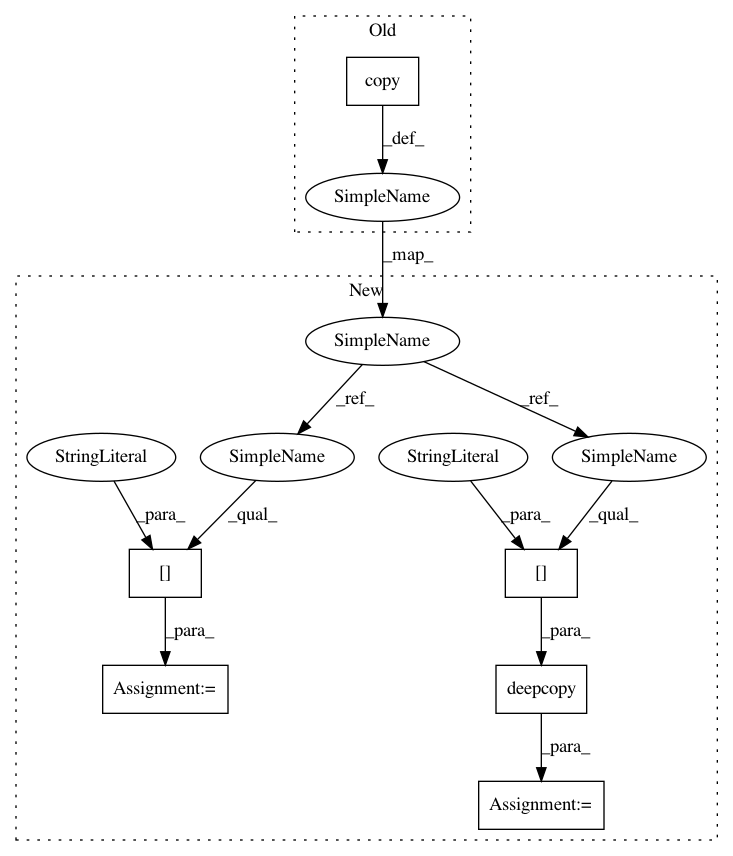

0e49e55d906660e5c9168447c77ebc6d917dda5c,softlearning/value_functions/utils.py,,get_V_function_from_variant,#Any#Any#,29
Before Change
def get_V_function_from_variant(variant, env):
V_params = variant["V_params"].copy()
observation_shape = env.active_observation_shape
input_shapes = (observation_shape, )
After Change
def get_V_function_from_variant(variant, env, *args, **kwargs):
V_params = variant["V_params"]
V_type = V_params["type"]
V_kwargs = deepcopy(V_params["kwargs"])
input_shapes = (env.active_observation_shape, )
return VALUE_FUNCTIONS[V_type](
In pattern: SUPERPATTERN
Frequency: 3
Non-data size: 6
Instances
Project Name: rail-berkeley/softlearning
Commit Name: 0e49e55d906660e5c9168447c77ebc6d917dda5c
Time: 2018-10-22
Author: hartikainen@berkeley.edu
File Name: softlearning/value_functions/utils.py
Class Name:
Method Name: get_V_function_from_variant
Project Name: rail-berkeley/softlearning
Commit Name: 0e49e55d906660e5c9168447c77ebc6d917dda5c
Time: 2018-10-22
Author: hartikainen@berkeley.edu
File Name: softlearning/value_functions/utils.py
Class Name:
Method Name: get_Q_function_from_variant
Project Name: rail-berkeley/softlearning
Commit Name: 0e49e55d906660e5c9168447c77ebc6d917dda5c
Time: 2018-10-22
Author: hartikainen@berkeley.edu
File Name: softlearning/replay_pools/utils.py
Class Name:
Method Name: get_replay_pool_from_variant